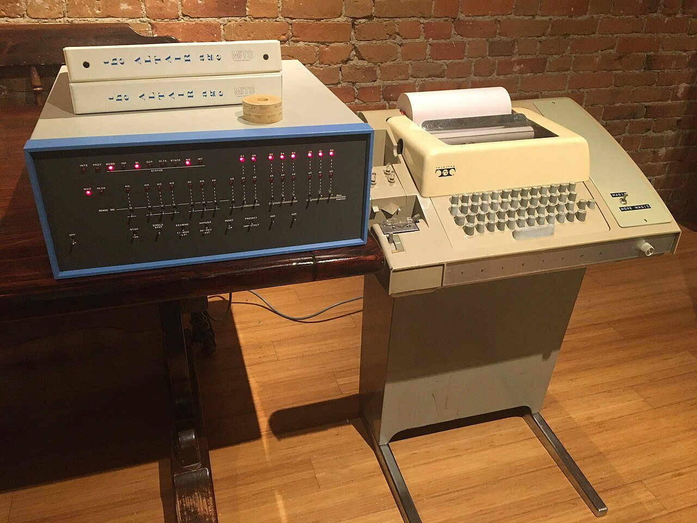

터미널과 셸
글자로 컴퓨터에게 일 시키기
영화에서 해커가 검은 화면에 글자를 빠르게 치는 장면을 본 적이 있을 겁니다. 그 검은 화면이 터미널입니다. 마우스로 누르는 대신 글자로 컴퓨터에게 일을 시키는 창입니다. 어려워 보이지만 규칙은 몇 가지뿐입니다. 이 장을 읽고 나면 터미널에 적힌 한 줄이 무슨 뜻인지 읽을 수 있습니다.
- 터미널이 무엇이고 왜 쓰는지 말할 수 있습니다.
- 파일이 컴퓨터 안 어디에 있는지를 '경로'로 적고 읽을 수 있습니다.
- 명령 한 줄을 보고 무엇을 하는 명령인지 알 수 있습니다.
- 파일을 지우는 명령을 실행하기 전에 무엇이 지워질지 확인할 수 있습니다.
- AI가 실행하려는 명령을 읽고, 허용하기 전에 멈춰야 할 명령을 알아볼 수 있습니다.
5.1터미널과 셸: 글로 주문하는 창구#
마우스가 있는데 왜 글자로 일을 시킬까요? 수학여행 사진 300장의 이름을 001.jpg부터 차례로 바꾼다고 해 봅시다. 마우스로는 300번을 고쳐야 합니다. 글로 시키면 한 줄로 끝납니다.
글로 쓴 명령은 복사해 두었다가 다시 쓸 수 있습니다. 친구나 AI에게 그대로 보여 줄 수도 있습니다. 그래서 프로그램을 만드는 사람들은 지금도 날마다 터미널을 씁니다.
AI 코딩 도구도 파일을 만들고 프로그램을 돌려 볼 때 터미널 명령을 씁니다. 명령 한 줄을 읽을 줄 알면 AI가 내 컴퓨터에서 무엇을 하려는지 알 수 있습니다.
1장에서 컴퓨터를 식당 주방에 빗댔습니다. 이 식당에는 주문서를 내는 창구가 있고, 창구에는 직원이 앉아 있습니다. 직원은 주문서를 읽고 주방에 전합니다.
- 터미널(terminal)은 주문 창구입니다. 글자를 쳐 넣고, 답을 글자로 돌려받는 창입니다.
- 셸(shell)은 창구 직원입니다. 내가 친 글을 읽고 알맞은 프로그램을 실행시키는 프로그램입니다.
그림을 번호대로 따라가 봅시다. 터미널에 ls src라고 쳤습니다. "src 폴더 안에 무엇이 있는지 보여 줘"라는 뜻입니다. ① 이 글이 셸에게 갑니다. ② 셸은 ls라는 프로그램을 찾아 실행시킵니다. ③ ls가 알아낸 답 main.py utils.py가 화면에 글자로 찍힙니다. src 안에 든 파일 두 개의 이름입니다.

터미널은 컴퓨터에 이미 들어 있습니다. 맥에서는 '터미널' 앱을, 윈도우에서는 시작 메뉴의 'PowerShell'을 찾아 엽니다. 열면 이런 줄이 나와 있습니다.
mina@macbook mygame %"주문 받을 준비가 됐습니다"라는 표시이고, 프롬프트(prompt)라고 부릅니다. 사용자 이름(mina), 컴퓨터 이름(macbook), 지금 있는 폴더(mygame)가 차례로 보입니다. 끝에는 %나 $가 붙습니다.
그림과 아래 예시에서는 프롬프트를 $ 한 글자로 줄여 적습니다. 따라 칠 때 $는 치지 않습니다.
명령을 치고 Enter 키를 누르면 실행됩니다. 일이 끝나면 프롬프트가 다시 나타납니다.
셸에도 종류가 있습니다. 맥은 zsh, 리눅스는 대개 bash를 씁니다. 이 장의 명령은 둘 다에서 통합니다. 윈도우의 PowerShell은 명령을 적는 법이 다릅니다. 그래서 AI에게 명령을 물을 때는 내 컴퓨터가 맥인지 윈도우인지부터 말해 줍니다. 윈도우에서 이 장을 그대로 따라 하려면 bash를 쓰게 해 주는 도구(예: WSL, Git Bash)를 씁니다.
5.2파일 시스템과 경로: 나무에서 길 찾기#
서랍에 공책과 프린트를 한데 쓸어 넣으면 나중에 아무것도 찾지 못합니다. 컴퓨터의 파일은 수십만 개나 됩니다. 그래서 파일을 폴더에 넣고, 폴더 안에 또 폴더를 넣어 정리합니다. 터미널에서는 폴더를 디렉터리(directory)라고도 부릅니다.
이 모양을 그리면 뒤집힌 나무가 됩니다. 맨 위의 뿌리를 루트(root)라고 하고 / 한 글자로 적습니다.
파일을 이렇게 나무 모양으로 정리하는 방식이 파일 시스템(file system)입니다.
mygame에서 출발하는 길입니다.그림 왼쪽은 게임을 만들고 있는 민아의 컴퓨터입니다. 루트 바로 아래에 폴더 두 개가 보입니다. Applications에는 앱이 들어 있습니다. Users에는 이 컴퓨터를 쓰는 사람마다 폴더가 하나씩 있습니다. 그 가운데 mina가 민아의 폴더입니다. 민아의 파일이 모이는 곳이어서 홈 폴더라고 부릅니다. 그 안에 게임 파일을 모아 둔 mygame 폴더가 있습니다. 게임 설정을 적어 둔 settings.json 파일은 mygame 안의 data 폴더에 있습니다.
루트에서 이 파일까지 지나가는 폴더 이름을 /로 이으면 /Users/mina/mygame/data/settings.json입니다. 이렇게 적은 위치를 경로(path)라고 합니다. 택배 상자의 주소와 같습니다.
윈도우에서는 루트 자리에 C: 같은 드라이브 이름이 오고, / 대신 \로 이어 C:\Users\mina\mygame처럼 적습니다. 한글 윈도우에서는 \가 ₩ 모양으로 보이기도 합니다.
셸은 언제나 나무의 어느 한 폴더에 서 있습니다. 게임 캐릭터가 지도의 한 곳에 서 있는 것과 같습니다. 이 폴더를 작업 디렉터리(working directory)라고 합니다. 그림에서는 "지금 여기"라고 적힌 mygame입니다.
경로를 적는 방법은 두 가지입니다.
- 절대 경로는 루트에서 출발하고
/로 시작합니다. "서울시 ○○구 ○○로 12"처럼 주소를 전부 적는 방식입니다. 어디에 서 있든 같은 파일을 가리킵니다. - 상대 경로는 서 있는 폴더에서 출발합니다. "여기서 두 번째 골목"처럼 말하는 방식입니다.
mygame에 서 있다면data/settings.json이면 됩니다. 짧지만, 서 있는 곳이 바뀌면 다른 곳을 가리킵니다.
상대 경로에는 줄임 기호 셋이 자주 나옵니다.
| 기호 | 뜻 | 예 (mygame에 서 있을 때) |
|---|---|---|
. |
지금 서 있는 폴더 | ./data → mygame 안의 data |
.. |
한 칸 위 폴더 | ../notes.txt → mina 안의 notes.txt |
~ |
내 홈 폴더 | ~/mygame → /Users/mina/mygame |
상대 경로에는 함정이 있습니다. mygame에 서서 적은 data/settings.json은 진짜 설정 파일을 가리킵니다. src로 옮겨 가서 똑같이 적으면 src 안에서 data를 찾습니다. 그런 폴더는 없습니다. 글자는 그대로인데 한 번은 찾고 한 번은 못 찾습니다.
상대 경로를 보면 "지금 어디에 서 있지?"를 먼저 물으세요. pwd라고 치면 서 있는 곳이 나옵니다.
맥과 윈도우는 보통 Logo.png와 logo.png를 같은 파일로 봅니다. 리눅스는 서로 다른 파일로 봅니다. 내 컴퓨터에서 잘 나오던 그림이 다른 컴퓨터에서만 안 나온다면, 파일 이름의 대문자와 소문자부터 견주어 보세요.
5.3명령 한 줄 읽기: 명령, 옵션, 인수#
식당 주문서에는 순서가 있습니다. "볶음밥, 맵게, 2인분을 3번 테이블로." 무엇을 만들지가 맨 앞에 오고, 어떻게 만들어 어디로 낼지가 뒤따릅니다. 셸에 내는 명령도 같습니다.
그림의 cp -r src backup은 "src 폴더를 속까지 통째로 backup이라는 이름으로 복사해라"라는 뜻입니다.
cp는 명령입니다. 맨 앞 낱말이고, 실행할 프로그램의 이름입니다.-r은 옵션(option)입니다.-로 시작하고, 일하는 방식을 바꿉니다. 주문서의 "맵게"입니다. 여기서는 "폴더 속까지 통째로"입니다.--help처럼-두 개로 시작하는 긴 이름의 옵션도 있습니다.src와backup은 인수(argument)입니다. 명령이 다룰 대상입니다.src가 "이것을",backup이 "여기로"입니다.
자주 쓰는 명령은 여덟 개쯤입니다.
| 명령 | 하는 일 | 예 |
|---|---|---|
pwd |
서 있는 폴더의 절대 경로를 보여 줌 | pwd |
ls |
폴더 안에 무엇이 있는지 보여 줌 | ls -a (.으로 시작하는 숨은 파일까지) |
cd |
서 있는 폴더를 옮김 | cd src, cd .. |
cat |
파일의 내용을 화면에 보여 줌 | cat notes.txt |
mkdir |
새 폴더를 만듦 | mkdir backup |
cp |
복사함 | cp a.txt b.txt |
mv |
옮기거나 이름을 바꿈 | mv old.txt new.txt |
rm |
지움 | rm old.txt |
앞의 넷은 보여 주거나 자리를 옮길 뿐입니다. 몇 번을 쳐도 파일은 그대로입니다. 뒤의 넷은 무언가를 만들거나 바꾸거나 없앱니다.
이름이 .으로 시작하는 파일은 ls만 쳐서는 나오지 않습니다. 그래서 숨은 파일이라고 부릅니다. 표의 ls -a처럼 -a를 붙이면 함께 나옵니다. 뒤에서 만날 .env(6장)와 .gitignore(7장)가 이런 파일입니다.
민아의 mygame 폴더에서 설정 파일의 복사본을 만들어 봅시다. 터미널에 치는 명령입니다.
$ mkdir backup
$ cp data/settings.json backup/
$ mv backup/settings.json backup/old.json
$ ls backup한 줄씩 풀면 이렇습니다.
backup이라는 새 폴더를 만듭니다.data안의settings.json을backup폴더에 복사합니다.- 그 복사본의 이름을
old.json으로 바꿉니다. backup폴더 안을 보여 달라고 합니다.
화면에 찍히는 것은 한 줄뿐입니다.
old.json앞의 세 명령은 아무 말도 하지 않았습니다. 이런 명령은 조용하면 잘된 것입니다.
윈도우의 PowerShell에도 표의 여덟 이름이 있습니다. 하지만 옵션을 적는 법이 다릅니다. 맥에서 폴더를 통째로 지우는 rm -rf build는 PowerShell에서 Remove-Item -Recurse -Force build입니다. 맥의 것을 그대로 치면 그런 옵션은 없다는 오류가 납니다. 이럴 때는 AI에게 내 운영체제를 알려 주고 다시 받습니다.
man ls라고 치면 ls의 설명서가 열립니다(q를 누르면 닫힙니다). 모르는 옵션은 실행하기 전에 여기서 찾아보거나 AI에게 뜻을 물어보세요.
멈추기, 다시 부르기, 채우기
터미널에서 손에 익혀 둘 키는 셋입니다.
| 키 | 하는 일 |
|---|---|
Ctrl+C |
돌고 있는 명령을 멈춤. 맥에서도 Control 키 |
↑ |
앞서 친 명령을 다시 불러옴 |
Tab |
치다 만 파일 이름을 끝까지 채워 줌 |
게임처럼 켜 두는 프로그램을 실행하면 끌 때까지 프롬프트가 돌아오지 않습니다. 고장이 아닙니다. 끄고 싶을 때 Ctrl+C를 누르면 됩니다.
터미널을 열고 pwd, ls, cd .., pwd를 차례로 쳐 보세요. 두 번째 pwd의 답이 어떻게 달라졌나요? cd ~라고 치면 언제든 홈 폴더로 돌아옵니다. ↑를 눌러 방금 친 명령이 다시 나오는지도 보세요.
5.4셸이 먼저 손보는 것: 빈칸, 따옴표, 별표#
분식집 주문서에 "치즈 김밥 하나"라고 적었습니다. 그런데 직원이 띄어 쓴 곳마다 끊어서 "치즈", "김밥", "하나"를 따로 전했다면 어떻게 될까요? 치즈 한 장과 김밥 한 줄이 따로 나올지도 모릅니다.
셸이 그렇게 읽습니다. 셸은 내가 친 줄을 프로그램에 넘기기 전에 빈칸(공백)마다 잘라 낱말로 나눕니다. 프로그램은 잘린 낱말만 받습니다.
My Game.txt라는 파일을 지우려고 rm My Game.txt라고 쳤다고 합시다. 셸은 rm, My, Game.txt 세 낱말로 자릅니다. rm은 My와 Game.txt라는 파일 두 개를 지우라는 말로 알아듣습니다. 운이 나쁘면 그런 이름의 엉뚱한 파일이 지워집니다.
그런 파일이 없으면 rm: My: No such file or directory라는 오류가 나옵니다. 오류 글에 내 파일 이름이 토막 나 있으면 빈칸을 의심하세요.
따옴표로 감싸면 그 안에서는 자르지 않습니다. rm "My Game.txt"라고 치면 이름이 한 덩어리로 전해집니다. 따옴표는 "여기는 자르지 마세요"라는 표시일 뿐, 프로그램에는 전해지지 않습니다. 이름에 빈칸이 있으면 언제나 따옴표로 감싸세요. '새 폴더'처럼 흔한 이름에도 빈칸이 들어 있습니다.
셸이 손보는 것이 하나 더 있습니다. 별표 *입니다. 별표는 "아무 글자나, 몇 글자든"이라는 뜻입니다. 그래서 *.log는 "이름이 .log로 끝나는 모든 파일"입니다. 이런 기호를 와일드카드(wildcard)라고 합니다. 카드놀이의 조커와 같습니다.
폴더에 a.log, b.log, c.log가 있다고 합시다. rm *.log라고 치면 셸이 별표 자리에 진짜 이름 셋을 채워 넣습니다. rm은 별표를 구경도 못 합니다.
rm *.log를 치려다 rm * .log처럼 빈칸이 끼면, 셸은 *와 .log 두 낱말로 자릅니다. 혼자 남은 *는 "이 폴더의 모든 파일"입니다(숨은 파일만 빠집니다). 폴더 안의 파일이 한꺼번에 지워집니다. 별표가 든 명령은 rm 자리에 먼저 ls를 넣어 무엇이 걸리는지 확인하세요.
5.5흐름을 잇기: 입구와 출구, 리다이렉션, 파이프#
주방에서 다 된 요리는 배식구로 나갑니다. "재료가 떨어졌어요" 같은 알림은 다른 길로 전합니다. 접시에 알림 쪽지가 섞이면 곤란하기 때문입니다.
프로그램도 통로 세 개를 받습니다. 입구가 하나, 출구가 둘입니다.
- 표준 입력(stdin)은 읽어 들이는 입구입니다. 보통 키보드에 이어져 있습니다.
- 표준 출력(stdout)은 결과가 나가는 출구입니다. 보통 화면에 이어져 있습니다.
- 표준 오류(stderr)는 오류 메시지 같은 "불평"이 나가는 출구입니다. 이것도 보통 화면입니다.
출구는 다른 곳으로 돌릴 수 있습니다. 이것을 리다이렉션(redirection)이라고 합니다. 터미널에 치는 명령 두 줄을 봅시다.
$ ls > list.txt
$ echo "게임 시작" >> play.log- 첫 줄의
>는ls의 답을 화면 대신list.txt파일에 적습니다. 파일이 이미 있으면 묻지 않고 옛 내용을 지우고 새로 씁니다. - 둘째 줄의
echo는 뒤에 적은 글을 그대로 내보내는 명령입니다.>>는 옛 내용 뒤에 이어 씁니다. 일기처럼 쌓아 가는 기록에 씁니다.
>가 돌리는 것은 표준 출력뿐입니다. 그래서 그림 아래쪽처럼 오류 메시지는 화면에 남습니다.
오류 쪽 출구는 통로 번호 2를 붙여 2>로 돌립니다. AI가 준 명령 끝에 붙어 있곤 하는 2>/dev/null은 "오류 메시지는 버려라"입니다. /dev/null은 무엇을 넣든 사라지는 구멍입니다. 왜 실패했는지도 함께 사라지니, 까닭을 찾을 때는 이 부분을 떼고 다시 실행합니다.
터미널에 아래 세 줄을 차례로 쳐 보세요. cat은 "새 줄" 한 줄만 보여 줍니다. 둘째 줄의 >가 첫 줄을 지우고 새로 썼기 때문입니다. 둘째 줄의 >를 >>로 바꿔 처음부터 다시 하면 두 줄이 다 남습니다. 다 봤으면 rm try-memo.txt로 연습 파일을 지웁니다.
$ echo "첫 줄" > try-memo.txt
$ echo "새 줄" > try-memo.txt
$ cat try-memo.txt파이프: 명령과 명령을 잇는 컨베이어 벨트
출구를 다른 프로그램의 입구에 끼울 수도 있습니다. 두 명령 사이에 세로 막대 |를 넣으면 됩니다. 이것이 파이프(pipe)입니다. 컨베이어 벨트처럼 앞 명령이 내놓은 것이 뒤 명령으로 흘러갑니다.
민아의 게임은 실행 중에 있었던 일을 app.log 파일에 한 줄씩 적습니다. 이런 기록을 로그라고 합니다. 별일 없으면 INFO, 문제가 생기면 ERROR라고 적습니다. 지금 다섯 줄이 적혀 있습니다. 오류는 몇 번일까요? 터미널에 이렇게 칩니다.
$ cat app.log | grep ERROR | wc -lcat app.log는 파일의 다섯 줄을 내보냅니다.grep ERROR는ERROR가 든 줄만 통과시킵니다. 두 줄이 남습니다.wc -l은 받은 줄 수를 셉니다.
화면에는 남은 줄 수가 찍힙니다. 맥에서는 숫자 앞에 빈칸이 몇 개 붙어 나옵니다.
2셸의 힘은 큰 명령 하나가 아니라 작은 명령을 잇는 방식에서 나옵니다. >는 파일로, |는 다음 명령으로 보냅니다.
5.6찾기: find는 이름을, grep은 내용을#
방에서 "수학 공책이 어디 있지?" 할 때는 표지의 이름을 봅니다. "소풍 날짜를 어디에 적어 뒀더라?" 할 때는 공책을 펴서 읽어야 합니다. 컴퓨터에서도 둘은 도구가 다릅니다. 이름으로 찾을 때는 find, 내용으로 찾을 때는 grep을 씁니다.
find는 이름표를 보고 파일을 골라내고, grep은 파일을 열어 글자가 든 줄을 골라냅니다.먼저 이름으로 찾습니다. 터미널에 치는 명령입니다.
$ find . -name "*.png".은 지금 서 있는 폴더입니다. 그 아래를 전부 뒤져서, 이름(-name)이 .png로 끝나는 그림 파일을 찾으라는 뜻입니다. 따옴표는 셸이 별표를 먼저 바꿔 버리지 않고 find에게 그대로 넘기게 합니다. 그림의 네 파일 가운데 둘이 걸립니다.
./logo.png
./hero.png이번에는 내용으로 찾습니다. 이것도 터미널에 치는 명령입니다.
$ grep -rn "timeout" src"src 폴더의 파일을 모두 열어 timeout이라는 글자가 든 줄을 찾아라"라는 뜻입니다. -r은 "폴더 속의 폴더까지", -n은 "줄 번호도 함께"입니다. 둘을 붙여 -rn으로 썼습니다.
src/config.py:2:timeout = 30src/config.py 파일의 2번째 줄에 timeout = 30이 있다는 답입니다.
AI 코딩 도구가 코드를 뒤질 때 하는 일이 이런 검색입니다. AI가 "timeout이라는 이름을 모두 wait_time으로 바꿨습니다"라고 하면 위 명령을 다시 쳐 봅니다. 한 줄이라도 나오면 빠뜨린 곳입니다.
정규식: 글자의 모양으로 찾기
반 명단에서 "김민아"를 찾기는 쉽습니다. 그 글자를 그대로 찾으면 됩니다. 그런데 "김으로 시작하는 이름 전부"나 "숫자로만 된 줄"은 어떻게 찾을까요? 글자 그대로가 아니라 모양으로 찾아야 합니다.
글자의 모양을 기호로 적는 방법이 정규식(regular expression)입니다. 기호 네 개만 먼저 봅시다.
| 기호 | 뜻 | 예 |
|---|---|---|
^ |
줄의 맨 앞 | ^ERROR → ERROR로 시작하는 줄 |
$ |
줄의 맨 끝 | 완료$ → 완료로 끝나는 줄 |
. |
아무 글자 하나 | a.c → abc, a1c |
[0-9]+ |
숫자가 한 개 이상 | save-[0-9]+ → save-7, save-12 |
grep에 -E 옵션을 붙이면 표의 기호를 모두 알아듣습니다. grep -E "^ERROR" app.log라고 치면 ERROR로 시작하는 줄만 나옵니다. 정규식은 따옴표로 감싸서 셸이 먼저 손대지 못하게 합니다.
정규식은 코드 안에서도 만납니다. 회원 가입 화면이 "전화번호는 숫자만 넣어 주세요"라고 알려 줄 때 흔히 정규식으로 검사합니다. AI가 써 준 코드에서 ^[0-9]+$ 같은 글자를 보면 표의 기호로 끊어 읽어 보세요. "맨 앞부터 맨 끝까지 숫자뿐인 줄"입니다.
5.7성공과 실패: 종료 코드와 &&#
주방은 주문을 끝낼 때마다 창구에 "다 됐어요"나 "못 만들어요"를 알립니다. 프로그램도 끝날 때 셸에 숫자 하나를 남깁니다. 이 숫자가 종료 코드(exit code)입니다. 0이면 성공, 0이 아니면 실패입니다. "문제 0개"라고 기억하면 쉽습니다.
종료 코드는 화면에 보이지 않습니다. echo $?라고 치면 방금 끝난 명령의 종료 코드가 나옵니다. 없는 파일을 열어 보고 물어봅시다. 터미널에 치는 명령입니다.
$ cat nofile.txt
$ echo $?화면에는 이렇게 찍힙니다.
cat: nofile.txt: No such file or directory
1- 첫 줄은
cat이 낸 오류 메시지입니다. "그런 파일이나 폴더가 없다"는 뜻입니다. - 둘째 줄의
1이 종료 코드입니다. 0이 아니니 실패입니다.
이 숫자 덕분에 "앞 명령이 성공했을 때만 다음 명령을 해라"라고 시킬 수 있습니다. 두 명령 사이에 &&를 넣습니다. ;를 넣으면 성공이든 실패든 다음 명령을 합니다. "숙제를 끝내면 게임해"가 &&이고, "숙제해, 그리고 게임해"가 ;입니다.
&&는 종료 코드가 0일 때만 열리는 문입니다.그림의 cd build는 build 폴더로 들어가라는 명령입니다. rm -rf *는 "서 있는 폴더 안의 것을 묻지 말고 전부 지워라"입니다. -r이 "폴더 속까지", -f가 "묻지 말고"입니다. build에 들어가 그 안을 비우려는 것입니다.
그런데 build 폴더가 없으면 cd는 실패하고, 셸은 원래 폴더에 그대로 서 있습니다. ;로 이었다면 rm -rf *가 그대로 실행됩니다. 원래 서 있던 폴더 안의 것이 통째로 지워집니다. &&로 이었다면 cd가 실패한 순간 멈추고, 아무것도 지워지지 않습니다.
AI가 주는 명령에는 &&로 여러 개를 이은 줄이 많습니다. 거꾸로 ||는 앞 명령이 실패했을 때만 다음 명령을 합니다. 그래서 명령 || true는 "실패해도 성공한 셈 쳐라"입니다. AI가 이것을 붙였으면 까닭을 물어보세요.
오류 메시지 읽기
오류 메시지는 대개 누가: 무엇을: 왜의 순서입니다. 위의 cat 오류도 그렇습니다. 자주 만나는 세 가지는 이렇습니다.
| 메시지 | 뜻 | 먼저 볼 것 |
|---|---|---|
command not found |
그런 이름의 프로그램을 못 찾음 | 오타, 프로그램을 깔았는지(6장) |
No such file or directory |
그 경로에 파일이 없음 | pwd와 ls로 서 있는 곳과 이름 |
Permission denied |
그 파일을 다룰 권한이 없음 | 파일의 권한. sudo부터 붙이지 않기(6장) |
오류가 수십 줄 쏟아질 때는 가장 먼저 나온 오류를 찾으세요. 뒤의 것은 첫 실패 때문에 도미노처럼 생긴 경우가 많습니다. AI에게 물어볼 때는 내가 친 명령, pwd의 답, 오류 메시지 전체를 함께 보여 주세요.
5.8셸 스크립트: 명령을 파일로 묶기#
같은 명령 몇 줄을 날마다 치려면 귀찮습니다. 그럴 때는 명령을 파일에 차례로 적어 두고 한 번에 실행합니다. 이런 파일이 셸 스크립트(shell script)입니다. 주방 벽에 붙여 둔 작업 순서표와 같습니다.
민아는 설정 파일 a.json, b.json, c.json을 backup 폴더에 복사해 두려고 합니다. 원본이 망가질 때를 대비해 복사본을 따로 두는 일을 백업이라고 합니다. 아래는 그 일을 하는 셸 스크립트 backup.sh입니다.
#!/usr/bin/env bash
set -e
mkdir -p backup
cp a.json backup/
cp b.json backup/
cp c.json backup/
echo "백업 완료"- 1행은 "이 파일은 bash로 실행하라"는 표시입니다.
- 2행
set -e는 "명령이 하나라도 실패하면 그 자리에서 멈춰라"입니다. - 3행은
backup폴더를 만듭니다.-p를 붙이면 폴더가 이미 있어도 오류가 나지 않습니다. - 4~6행은 파일 세 개를 하나씩 복사합니다.
- 7행은 화면에 "백업 완료"라고 찍습니다.
터미널에 bash backup.sh라고 치면 위에서부터 차례로 실행됩니다. AI는 ./backup.sh라고 치라고도 합니다. "지금 폴더의 backup.sh를 실행해라"입니다. 이때 permission denied가 나오면 실행 권한이 없는 것이고, 푸는 법은 6장에 있습니다.
이제 b.json이 없어서 두 번째 복사가 실패했다고 합시다.
set -e가 없으면 스크립트는 끝까지 달려 "백업 완료"를 찍습니다.셸은 원래 명령이 실패해도 다음 줄로 넘어갑니다. 그림 왼쪽이 그 모습입니다. "백업 완료"까지 찍고, 종료 코드도 마지막 명령의 것인 0입니다. 실패했는데 성공처럼 보입니다.
그림 오른쪽처럼 set -e가 있으면 실패한 줄에서 멈춥니다. 종료 코드는 1입니다. 오른쪽 아래의 trap은 "끝날 때 이 일은 꼭 해라" 하고 뒷정리를 맡겨 두는 명령입니다.
마지막 줄의 "완료"라는 글자는 아무것도 약속하지 않습니다. 믿을 것은 종료 코드입니다.
변수와 반복: 같은 줄을 여러 번 적지 않기
위 스크립트에는 cp 줄이 세 번 나옵니다. 파일이 서른 개라면 서른 줄을 적어야 할까요? 청소 당번표에 "1번부터 30번까지 차례로"라고 한 줄만 적듯이, 스크립트에도 "파일마다 한 번씩"이라고 적는 방법이 있습니다. 아래는 같은 일을 하는 bash 스크립트입니다.
#!/usr/bin/env bash
set -e
dest="backup"
mkdir -p "$dest"
for f in *.json; do
cp "$f" "$dest/"
done
echo "백업 완료"- 1~2행과 8행은 앞의 스크립트와 같습니다.
- 3행은
backup이라는 글자에dest라는 이름을 붙입니다. 이렇게 값에 붙인 이름을 변수(variable)라고 합니다. - 4행의
$dest는 "dest에 담긴 값"이라는 뜻입니다. 셸이 이 자리에backup을 채워 넣습니다. - 5행의
for는 반복을 시킵니다. "*.json에 걸리는 파일마다 한 번씩"이라는 뜻입니다. 파일이 셋이면 셸은 변수f에a.json,b.json,c.json을 차례로 담으면서do와done사이를 되풀이합니다. - 6행이 되풀이되는 줄입니다.
f에 담긴 파일을dest폴더에 복사합니다. 7행done은 되풀이가 여기까지라는 표시입니다.
변수는 "$f"처럼 큰따옴표로 감쌌습니다. 파일 이름에 빈칸이 있어도 한 덩어리로 전하려는 것입니다. 이제 파일이 서른 개로 늘어도 스크립트는 고칠 필요가 없습니다. 변수와 반복은 초코딩 기초에서 더 천천히 다룹니다.
값이 없는 변수를 꺼내 쓰면 셸은 그 자리를 그냥 비워 둡니다. 그래서 변수 dir이 비어 있으면 rm -rf "$dir"/*는 rm -rf /*가 됩니다. 루트 아래의 모든 것을 지우라는 말입니다. 변수가 든 지우는 명령은 echo "$dir"로 값이 들어 있는지 먼저 보세요.
AI가 써 준 스크립트에는 set -euo pipefail이 자주 보입니다. set -e에 두 가지를 더한 것입니다. -u는 만든 적 없는 변수를 쓰면 멈춥니다. -o pipefail은 파이프로 이은 명령 가운데 하나만 실패해도 줄 전체를 실패로 칩니다.
5.9지우기 전에: 프로젝트 폴더의 네 종류#
교실을 청소할 때 구겨진 연습 종이는 버려도 됩니다. 다시 쓰면 됩니다. 하지만 한 해 동안 적어 온 학급 일지는 버리면 되찾을 수 없습니다. 버리기 전에 물을 것은 하나입니다. "이것은 다시 만들 수 있는가?"
휴지통에 넣은 파일은 되살릴 수 있습니다. 하지만 rm으로 지운 파일은 휴지통을 거치지 않습니다. 폴더를 통째로, 묻지도 않고 지우는 rm -rf는 더 위험합니다.
프로그램을 만들 때는 관련된 파일을 폴더 하나에 모읍니다. 민아의 mygame 같은 폴더이고, 프로젝트 폴더라고 부릅니다. 그 안의 것은 네 종류로 나뉩니다.
- 소스는 사람이 직접 쓴 원본입니다. 주방의 레시피입니다. 지우면 다시 만들 수 없습니다. 소스를 지키는 방법은 7장에서 배웁니다.
- 빌드 결과는 소스로 만들어 낸 완성품입니다. 이렇게 만드는 일을 빌드라고 합니다(4장). 완성된 요리와 같아서, 지워도 다시 만들면 됩니다.
- 캐시는 다음번에 빨리 하려고 남겨 둔 것입니다. 손질해 둔 재료와 같습니다. 지워도 다음 실행이 조금 느려질 뿐입니다.
- 실행 데이터는 프로그램을 쓰는 동안 쌓인 기록입니다. 게임의 세이브 파일이나 사용자가 올린 사진입니다. 식당의 예약 장부처럼 다시 만들 수 없으니 백업해 둡니다.
그림에 적힌 src/, build/, saves/ 같은 것은 각 종류가 흔히 담기는 폴더의 이름입니다. 6장에서 만날 node_modules처럼 남이 만든 부품을 받아 둔 폴더는 다시 받으면 되는 쪽입니다. 비밀 값을 적어 둔 .env 파일은 다시 만들 수 없는 쪽입니다.
지우는 명령 앞에서는 세 가지를 합니다.
pwd로 서 있는 곳을 확인합니다. 상대 경로와 별표는 서 있는 곳에 따라 뜻이 달라집니다.rm자리에ls를 넣어 먼저 쳐 봅니다.rm -rf build/*를 치기 전에ls build/*를 칩니다.- 다시 만들 수 있는 것인지 묻습니다. 폴더 이름이
build나cache여도 하나뿐인 원본이 섞여 있을 수 있습니다.
지우기 전에 묻습니다. 지금 어디에 서 있는가, 무엇이 걸리는가, 다시 만들 수 있는가.
5.10AI가 명령을 실행하려 할 때: 허용하기 전에 읽기#
현장 체험 학습 동의서에는 어디로 가는지, 언제 돌아오는지가 적혀 있습니다. 부모님은 그것을 읽고 나서 서명합니다.
AI 코딩 도구는 명령을 실행하기 전에 "이 명령을 실행할까요?" 하고 묻습니다. 도구가 내미는 동의서입니다. 허용을 누르면 그 명령은 내 컴퓨터에서, 내가 친 것과 똑같이 실행됩니다. AI가 지운 파일도 휴지통을 거치지 않습니다.
그림의 명령은 rm -rf build/*입니다. 지우기 전에 묻던 세 가지를 그대로 묻습니다.
- 어디에서 실행되나. AI 도구도 셸처럼 한 폴더에 서 있습니다.
build/*는 상대 경로여서, 그곳이mygame이 아니면 다른 곳을 가리킵니다. - 무엇을 하나. 명령, 옵션, 인수로 끊어 읽습니다.
rm은 "지워라",-rf는 "폴더 속까지, 묻지 말고",build/*는 "build안의 전부"입니다.&&나|가 있으면 거기서 끊어 토막마다 읽습니다. - 되돌릴 수 있나.
pwd,ls,cat,grep처럼 보기만 하는 명령은 대체로 허용해도 됩니다. 지우고, 덮어쓰고, 컴퓨터의 설정을 바꾸는 명령은 멈춥니다.
모르는 낱말이 있으면 거절하고 물어봅니다. "방금 그 명령을 토막마다 풀이해 줘. 무엇이 바뀌거나 지워지는지도 알려 줘."
아래 글자가 보이면 꼭 멈춰서 읽습니다.
| 보이는 글자 | 뜻 | 허용하기 전에 볼 것 |
|---|---|---|
rm -rf |
폴더째, 묻지 않고 지움. 휴지통이 없음 | 경로가 내 프로젝트 폴더 안인가. ls로 보면 무엇이 걸리는가 |
sudo |
뒤의 명령을 컴퓨터 관리자의 힘으로 실행함 | 왜 필요한지 물었는가. 프로젝트 폴더 안의 일에는 거의 필요 없음(6장) |
curl 주소 | sh |
인터넷에서 받은 스크립트를 읽어 보지 않고 바로 실행함 | 주소가 그 프로그램의 공식 사이트인가 |
> 파일 |
그 파일의 옛 내용을 지우고 새로 씀 | 이미 있는 내 파일인가 |
curl은 인터넷 주소에서 글을 받아 오는 명령이고 sh는 셸입니다. 파이프로 이었으니 받아 온 스크립트가 곧바로 실행됩니다. 프로그램을 깔 때 흔히 쓰는 방법이지만, 남이 쓴 순서표를 읽지 않고 따르는 일입니다.
"항상 허용"을 고르면 다음부터 묻지 않는 도구도 있습니다. 보기만 하는 명령에만 쓰세요. 어디까지 맡길지는 30장에서 다룹니다. 크게 지우거나 바꾸는 일을 맡기기 전에는 7장의 저장 지점부터 만들어 둡니다.
AI 챗봇에 이렇게 물어보세요. "맥 터미널에서 build 폴더 안의 .log 파일을 모두 지우는 명령을 알려 줘." 받은 명령은 실행하지 말고 명령, 옵션, 인수로 끊어 읽어 봅니다. 이어서 "지우기 전에 무엇이 지워질지 목록만 보는 명령도 알려 줘"라고 물어보세요. 두 명령은 어디가 다른가요?
헷갈리기 쉬운 짝#
| 짝 | 차이 |
|---|---|
| 터미널 / 셸 | 글자가 오가는 창 / 그 글을 읽고 프로그램을 실행시키는 프로그램 |
| 절대 경로 / 상대 경로 | 루트에서 출발, 어디서나 같은 곳 / 서 있는 폴더에서 출발, 서 있는 곳에 따라 달라짐 |
| 리다이렉션 / 파이프 | 출력을 파일로 보냄 / 출력을 다음 명령의 입력으로 보냄 |
; / && |
앞 명령이 실패해도 다음을 실행 / 앞 명령이 성공했을 때만 다음을 실행 |
| 와일드카드 / 정규식 | 파일 이름을 고르는 기호, 셸이 진짜 이름으로 바꿔 넣음 / 글자의 모양을 적는 방법, grep 같은 프로그램이 읽음. 같은 .과 *도 뜻이 다름 |
실전 사례#
민아는 어제 mygame 폴더에 서서 python3 src/main.py라고 쳐서 게임을 켰습니다. 파이썬에게 src 안의 main.py를 실행시키는 명령입니다. 오늘은 cd src로 들어간 다음 python3 main.py라고 쳤습니다. 그랬더니 오류의 마지막 줄에 이렇게 나옵니다. 코드는 한 글자도 바꾸지 않았습니다.
FileNotFoundError: [Errno 2] No such file or directory: 'data/settings.json'- 오류 메시지에서 경로를 읽습니다.
data/settings.json은/로 시작하지 않으니 상대 경로입니다. - 서 있는 곳을 확인합니다.
pwd의 답은/Users/mina/mygame/src입니다. - 둘을 이어 붙여 봅니다. 게임이 찾아간 곳은
/Users/mina/mygame/src/data/settings.json입니다.src안에data폴더는 없습니다. 진짜 파일은 한 칸 위mygame/data에 있습니다. - 고치고 확인합니다.
cd ..로mygame에 올라가서 어제처럼 켜면 잘 켜집니다.
상대 경로는 코드 파일이 있는 곳이 아니라 실행할 때 서 있던 곳을 따라갑니다.
한눈에 정리#
- 터미널은 글자가 오가는 창구이고, 셸은 그 글을 읽고 프로그램을 실행시키는 직원입니다.
- 절대 경로는 루트
/에서, 상대 경로는 지금 서 있는 폴더에서 출발합니다. - 명령 한 줄은 명령, 옵션, 인수의 순서로 읽습니다.
- 셸은 빈칸에서 줄을 자릅니다. 따옴표는 묶고, 별표는 파일 이름들로 바뀝니다.
>는 결과를 파일로 보내며 옛 내용을 덮어씁니다.|는 다음 명령으로 보냅니다.find는 이름으로,grep은 내용으로 찾습니다. 정규식을 쓰면 글자의 모양으로 찾습니다.- 종료 코드 0은 성공입니다.
&&는 앞 명령이 성공했을 때만 다음 명령을 실행합니다. - 스크립트가 찍는 "완료"라는 글자가 아니라 종료 코드를 믿습니다.
- 스크립트에서 변수는 값에 이름을 붙이고,
for는 같은 일을 파일마다 되풀이합니다. rm에는 휴지통이 없습니다. 지우기 전에pwd와ls로 확인합니다.- AI가 실행하려는 명령은 읽고 나서 허용합니다.
rm -rf,sudo,curl … | sh,>가 보이면 멈춥니다.
확인 문제#
민아가 /Users/mina/mygame/src에 서 있습니다. 친구가 "한 칸 위로 올라가서 data 폴더의 settings.json을 열어 봐"라고 합니다. 이 말을 상대 경로와 절대 경로로 적어 보세요.
정답 보기
상대 경로는 ../data/settings.json입니다. ..은 한 칸 위인 mygame입니다. 절대 경로는 /Users/mina/mygame/data/settings.json입니다.
AI 코딩 도구가 "rm -rf ~/mygame/build 명령을 실행할까요?" 하고 묻습니다. 이 한 줄을 명령, 옵션, 인수로 나눠 읽어 보세요. 허용을 누르기 전에 무엇을 해 보면 좋을까요?
정답 보기
rm이 명령이고 지운다는 뜻입니다. -rf는 옵션이고 "폴더 속까지, 묻지 말고"입니다. ~/mygame/build는 인수이고 홈 폴더 안 mygame의 build 폴더입니다. rm에는 휴지통이 없으니 먼저 ls ~/mygame/build로 안을 봅니다. 다시 만들 수 있는 빌드 결과뿐이면 허용합니다.
여행 사진을 My Photos라는 폴더에 모아 두었습니다. cd My Photos라고 쳤더니 오류가 납니다. 폴더는 분명히 있습니다. 왜 그럴까요?
정답 보기
셸이 빈칸에서 줄을 잘라 My와 Photos 두 낱말로 넘겼기 때문입니다. cd "My Photos"처럼 따옴표로 감싸면 한 덩어리로 전해집니다.
엄마가 "방 청소를 끝내면 게임해도 돼"라고 했습니다. 이 말은 ;와 && 가운데 어느 쪽과 닮았나요? AI가 알려 준 cd build; rm -rf *에서는 무엇을 바꿔야 할까요?
정답 보기
&&와 닮았습니다. 앞의 일이 성공했을 때만 뒤의 일을 합니다. AI의 명령도 ;를 &&로 바꿉니다. 그대로 두면 cd가 실패했을 때 지금 서 있는 폴더 안의 것이 지워집니다.
AI가 만들어 준 백업 스크립트를 실행했더니 마지막에 "백업 완료"가 찍혔습니다. 백업이 잘됐다고 믿어도 될까요?
정답 보기
아직 믿을 수 없습니다. set -e가 없는 스크립트는 중간에 실패해도 끝까지 달려 마지막 글자를 찍습니다. set -e가 있는지 보고, ls backup으로 파일이 정말 복사됐는지 확인합니다.
AI에게 맡길 때#
AI 코딩 도구는 터미널 명령을 스스로 실행하려고 합니다. 보기만 하는 명령은 맡겨도 됩니다. 지우거나 옮기거나 덮어쓰는 일은 실행하기 전에 무엇을 건드릴지 먼저 보여 주게 하세요.
나는 맥에서 zsh를 써.
mygame폴더에서 빌드 결과와 캐시만 지우는 스크립트clean.sh를 만들어 줘.src,data,saves폴더와.env파일은 건드리지 마. 중간에 실패하면 바로 멈추게set -e를 넣어 줘. 처음에는 아무것도 지우지 말고 지울 파일의 목록만 보여 줘. 줄마다 무슨 뜻인지도 풀이해 줘.
받은 답에서 확인할 것
- 지울 목록에 소스, 세이브 파일,
.env가 섞여 있지 않은가. rm이 든 줄의 경로가build처럼 뚜렷한 폴더 이름으로 시작하는가. 변수나*만 덩그러니 있지 않은가.- 명령을
;가 아니라&&나set -e로 이었는가. - 경로와 변수를 큰따옴표로 감쌌는가.
AI가 자주 하는 실수
- 서 있는 곳을 착각합니다. 다른 폴더인 줄 알고 상대 경로를 적습니다.
No such file or directory가 되풀이되면 "pwd부터 실행해 보고 다시 해 줘"라고 합니다. - 다른 운영체제의 명령을 줍니다. 윈도우 PowerShell에
rm -rf를 치라고 하는 식입니다. 그런 옵션이나 명령이 없다는 오류가 나면 내 운영체제를 다시 말해 줍니다. - 오류를 가려서 통과시킵니다. 명령 끝에
2>/dev/null이나|| true를 붙여 실패가 안 보이게 합니다. 이런 글자가 새로 붙었으면 왜 붙였는지 묻습니다. - "완료했습니다"라고만 말합니다. 스크립트가 찍은 글자를 믿고 전한 것일 수 있습니다.
ls로 결과가 정말 있는지 직접 봅니다.
용어 정리#
- 터미널terminal
- 글자로 명령을 쳐 넣고 답을 글자로 돌려받는 창.
- 셸shell
- 내가 친 명령을 읽고 알맞은 프로그램을 실행시키는 프로그램.
- 프롬프트prompt
-
명령을 받을 준비가 됐다고 터미널이 보여 주는 표시.
%나$로 끝난다. - 디렉터리directory
- 파일과 다른 폴더를 담는 곳. 폴더와 같은 말.
- 루트root
-
폴더 나무의 맨 위.
/한 글자로 적는다. - 파일 시스템file system
- 파일을 폴더의 나무 모양으로 정리해 두는 방식.
- 경로path
-
파일이나 폴더가 있는 곳을
/로 이어 적은 주소. - 작업 디렉터리working directory
- 셸이 지금 서 있는 폴더.
- 절대 경로absolute path
-
루트
/에서 출발해 전부 적은 경로. - 상대 경로relative path
- 지금 서 있는 폴더에서 출발하는 경로.
- 명령command
- 셸에게 시키는 일. 한 줄의 맨 앞 낱말이고, 실행할 프로그램의 이름이다.
- 옵션option
-
명령이 일하는 방식을 바꾸는 낱말.
-r처럼-로 시작한다. - 인수argument
- 명령이 다룰 대상. 주로 파일이나 폴더의 경로.
- 와일드카드wildcard
-
여러 파일 이름을 한꺼번에 가리키는 기호.
*가 대표이다. - 표준 입력stdin
- 프로그램이 읽어 들이는 입구. 보통 키보드에 이어져 있다.
- 표준 출력 / 표준 오류stdout / stderr
- 프로그램의 두 출구. 결과와 오류 메시지가 따로 나간다.
- 리다이렉션redirection
-
출구를 화면 대신 파일로 돌리는 것.
>는 새로 쓰고>>는 이어 쓴다. - 파이프pipe
-
앞 명령의 출구를 뒤 명령의 입구에 잇는 것.
|로 적는다. - 정규식regular expression
-
찾을 글자의 모양을 기호로 적는 방법.
^는 줄의 맨 앞,$는 맨 끝이다. - 종료 코드exit code
- 프로그램이 끝나면서 남기는 숫자. 0은 성공, 그 밖은 실패.
- 셸 스크립트shell script
- 명령을 차례로 적어 두고 한 번에 실행하는 파일.
- 변수variable
-
값에 붙인 이름. 셸에서는
dest="backup"처럼 만들고$dest로 꺼내 쓴다. - 반복loop
-
같은 일을 여러 번 되풀이시키는 것. 셸에서는
for로 적는다. - 소스source
- 사람이 직접 쓴 원본. 지우면 다시 만들 수 없다.
- 빌드 결과
- 소스로 만들어 낸 완성품. 지워도 다시 만들 수 있다.
- 캐시cache
- 다음번에 빨리 하려고 남겨 둔 것. 지워도 조금 느려질 뿐이다.
- 실행 데이터
- 프로그램을 쓰는 동안 쌓인 기록. 다시 만들 수 없어서 백업해 둔다.
더 읽을거리#
- MIT Missing Semester — The Shell — 셸과 경로, 파이프를 직접 따라 치며 익히는 강의 노트입니다.